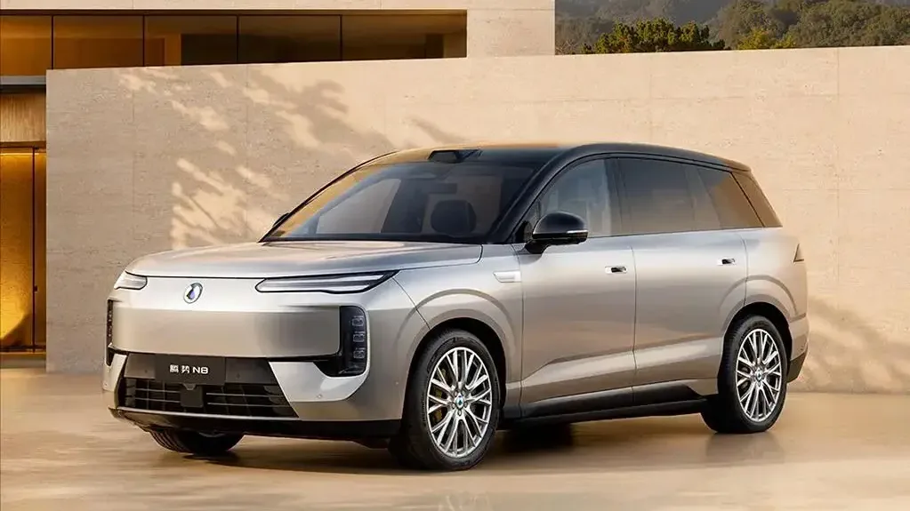

Denza（騰勢） · 改款 · 中國2026-11-06
騰勢 N8 EV 11/12 上市：分體頭燈、主動進氣與四款雙色車身
BYD's new Denza N8 EV to launch on November 12
BYD 旗下騰勢宣布改款純電 SUV N8 EV 將於 11 月 12 日上市，10 月 26 日已開放預訂。車長 5,150mm、軸距 3,075mm，延續品牌設計語言，提供四種單色與四種雙色塗裝。
設計解析 Design Notes
- 燈號分體式頭燈：上方是雙條 LED 日行燈，下方另設直立的遠近光燈組。
- 車頭前保桿整合主動式進氣格柵，並保留前車廂。
- 側面凹入式半隱藏門把，輪圈有 20 吋與 21 吋兩種。
- 車尾車頂擾流板整合高位煞車燈，隱藏式後雨刷，配貫穿式雙條尾燈。
- CMF單色有 Celestial Cyan 等四色，另有 Deep Space Blue、Aurora Green、Daylight Orange、Twilight Grey 四種雙色。